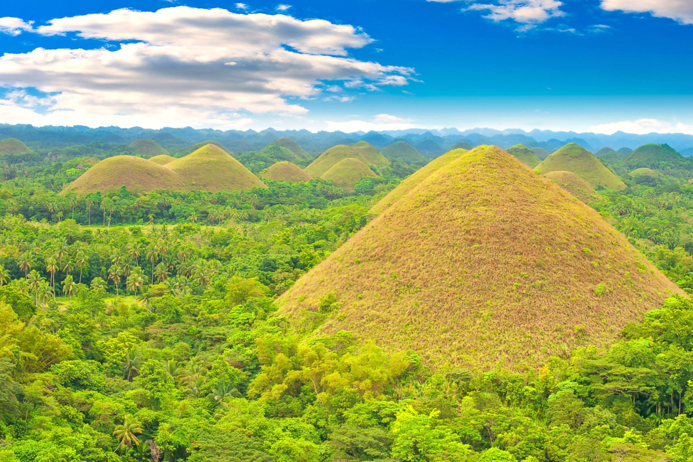

Chocolate Hills, Bohol
Origins and Location of Chocolate Hills, Bohol
The name of Bohol derives from another word "Bo-ho" or Bo-ol. The people who inhabited Bohol were said to be descendants of the Pintados who were living examples of their own folk and culture. Bohol is an island located within the Central Visayas region, which is surrounded by 75 minor islands. It is considered as the tenth largest island of the Philippines.
Within the center of Bohol lies the Chocolate Hills which is comprised of a mesmerizing landscape. It earned its name due to the hills gaining a brown color during dry seasons and green during wet seasons. These limestone formations are considered as a very popular tourist attraction within the Philippines.
The Effects of the Pandemic
Tourism plays a major role within the economy of Bohol. Thus it is considered as one of the most important businesses to be maintained within the region. During the rise of the Covid-19 Pandemic from 2019, Bohol saw a negative effect of the Quarantines within its tourist businesses.
It was estimated that the effects of the Covid-19 crisis had caused the economy in Bohol to lose about P10 billion with 200,000 people losing their jobs. This amount in layoffs almost comprises of 42% of Bohol's entire workforce. The effects of the Covid-19 crisis can also be seen with the statistical graph showing how many tourists are visiting the region.
Provincial Visitor Arrivals in Province of Bohol
| 2022 | 2021 | 2020 | 2019 | 2018 | |
|---|---|---|---|---|---|
| Total | 535,803 | 179,781 | 177,341 | 1,581,904 | 1,496,129 |
| Foreign | 32,310 | 1,127 | 68,104 | 720,364 | 641,527 |
| Domestic | 503,368 | 178,654 | 109,237 | 854,853 | 850,047 |
| OFWs | 125 | 6,687 | 4,555 | ||
Solutions and Innovations
In an effort to combat this problem in Bohol, The Department of Tourism has made several efforts in improving the tourism business of the province. One of the projects that they had proposed was the use of a "smart tourism" system which is based on the features of contactless transactions. The Department had insisted that digital technology are crucial in the recovery of the tourism industry.
Digital technologies provides many opportunities within the tourism business and allows for the expansion of markets and services improvement. Thus, the department has encouraged the government to push through and encourage innovations to generate new products and systems that the public may utilize to their advantage.